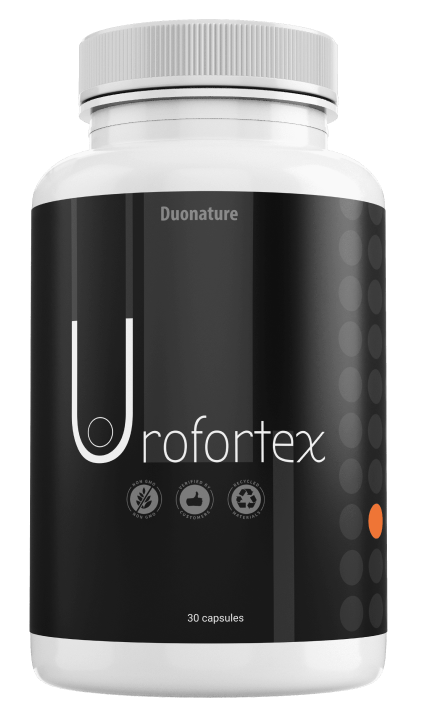

Todos los días recibo muchas cartas pidiéndome que hable sobre el método moderno de agrandamiento del pene. Intentaré responder a todas tus preguntas en este artículo, pero primero debes decidir el tamaño.
Si el pene en estado erecto no superara los 13 centímetros, sería casi imposible que una mujer logre el orgasmo. En este caso, un hombre debe pensar en cómo agrandar su pene y resolver el problema de inmediato.
Desde un punto de vista médico, un tamaño de 13 a 16 centímetros es un tamaño bastante normal, pero es difícil satisfacer a una mujer.
16-18 centímetros en un pene erecto es común, pero la mayoría de las mujeres, según múltiples encuestas, dicen que quieren más.
Si el pene en estado erecto supera los 18 centímetros, entonces es fácil para una mujer alcanzar el orgasmo.
Hay dos formas de agrandar el pene:
La cirugía de agrandamiento del pene es muy riesgosa y puede causar muchas complicaciones. La operación se realiza bajo anestesia general y la persona puede experimentar un dolor insoportable durante 2-3 meses después de la operación. Además, la operación puede provocar daños irreparables en los testículos, por lo que se advierte con antelación a cada paciente sobre todos los posibles riesgos.
Agrandamiento del pene en casa usando geles y tabletas especiales (ver más abajo).
Entonces, hay algunas cremas y píldoras excelentes en el mercado en este momento, pero según la investigación de laboratorio y la práctica médica, el producto más efectivo es Urofortex en cápsulas Se asignaron más de 3 años para la investigación de laboratorio, de acuerdo con los resultados, se obtuvieron todos los certificados de seguridad y efectividad necesarios. Después de tomar las cápsulas, el pene aumentará de 3 a 7 centímetros. Utilizando las cápsulas Urofortex con regularidad (al menos 1 mes), se pueden conservar los resultados de la ampliación. Esto significa que después de ingestión de las cápsulas Urofortex, el pene conservará su nuevo tamaño ..
- El tamaño del pene erecto aumentará de 3 a 7 centímetros.
- Aumenta el apetito sexual. El hombre se sentirá excitado de inmediato. Erecciones fuertes que ocurren durante el coito durante todo el período.
- Aumenta el orgasmo. El orgasmo se incrementa por la sensibilidad del pene y un mayor deseo sexual masculino.
- Sexo más largo. El sexo dura más.
- Se mejora la calidad del semen. Durante el orgasmo, aumenta la cantidad de esperma.

Mi pene durante erecciones anteriores era de 10 cm Todas las chicas se rieron de mí. Mi pene creció 4 cm en solo una semana y finalmente me sentí como un hombre.

usar las cápsulas Urofortex. El resultado es más que excelente. Antes mi pene medía 13 cm, ahora tiene 17. Me parece bien por el precio de las cápsulas y en comparación con el costo de la operación. Ningún efecto secundario. Se mantiene el tamaño.
Según las estadísticas, 7 de cada 10 hombres mayores de 35 años tienen problemas con la fuerza masculina. Esto puede ser una disminución de la erección o pérdida completa de la misma, eyaculación precoz, falta de sensibilidad, incapacidad para completar el coito. Tratamiento Urofortex no solo aumentará el tamaño del pene, sino que también ayudará a eliminar dichos problemas.
Las cápsulas Urofortex es una gran solución para el agrandamiento del pene, segura, económica y probada. Cuidado, ahora se encuentran cada vez más falsificaciones. Al hacer clic en el enlace a continuación, podrá comprar productos originales. Las cápsulas Urofortex con 50% de descuento, oferta limitada
 Compre ahora con un50% de descuento